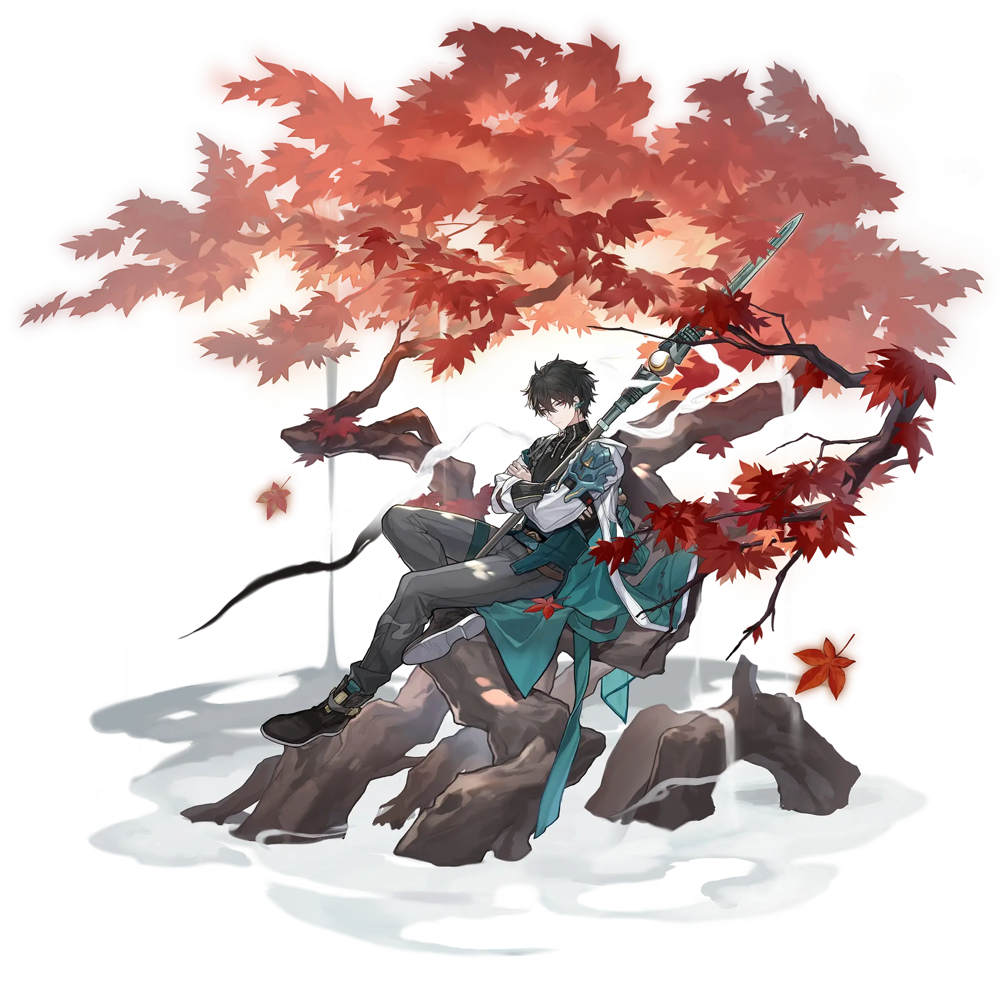

Dan Heng
Best Dan Heng build guide for Honkai Star Rail. See Dan Heng's best Relics, Light Cones, teams, Eidolons, Trace priority, and how to play Dan Heng.
🔍 Detail Skill
Semua skill aktif dan pasif beserta efeknya.
Deals Wind DMG equal to #1[i]% of Dan Heng's ATK to a single enemy.
Deals Wind DMG equal to #1[i]% of Dan Heng's ATK to a single enemy. On a CRIT Hit, there is a #4[i]% base chance to reduce the target's SPD by #2[i]% for #3[i] turn(s).
When Dan Heng is the target of an ally's Ability, his next attack's Wind RES PEN increases by #1[i]%. This effect can be triggered again after #2[i] turn(s).
After Dan Heng uses his Technique, his ATK increases by #1[i]% at the start of the next battle for #2[i] turn(s).
⚔ Light Cone Terbaik
Diurutkan dari yang paling kuat. Persentase menunjukkan performa relatif terhadap pilihan terbaik.
💎 Relic Set Terbaik
Set terbaik untuk karakter ini, diurutkan berdasarkan prioritas.
📊 Stat Utama
Stat yang dicari pada tiap slot.
👥 Tim yang Direkomendasikan
Karakter yang sering dipasangkan bersama Dan Heng.
 Sunday
Sunday
 Bronya
Bronya
 Dan Heng • Imbibitor Lunae
Dan Heng • Imbibitor Lunae
 Dan Heng • Permansor Terrae
Dan Heng • Permansor Terrae
🔗 Lanjutkan
Build ini dirangkum dari Prydwen Institute. Starwise tidak menghitung sendiri. Angka bisa berubah setelah patch atau karakter baru rilis.